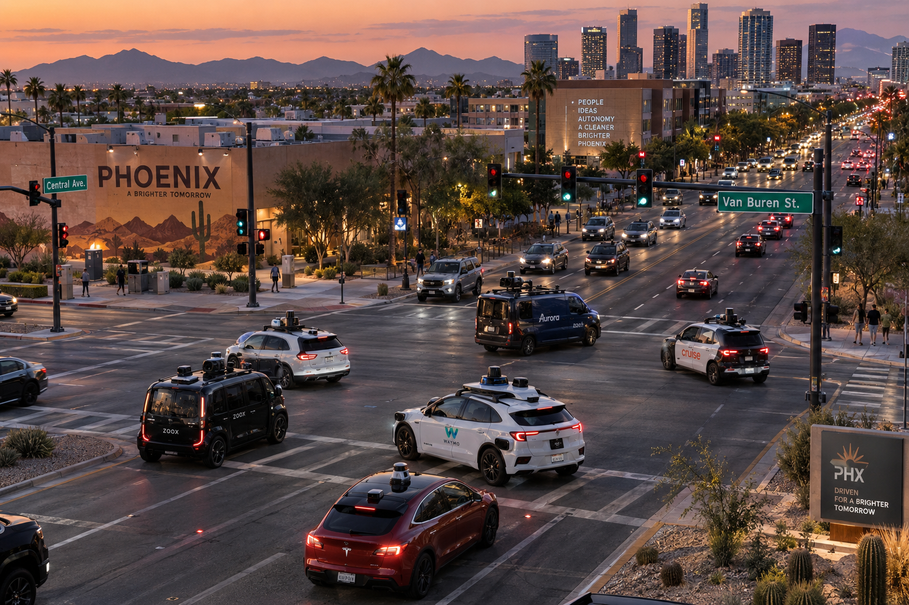

Phoenix is the World's
Most Operationally
Complex AV Market.
Five autonomous vehicle operators. Five different technology approaches. Five different regulatory statuses. One dissolved partnership. One active software recall recovery. One brand new entrant. All on the same roads in Phoenix, Arizona, right now. Nobody is talking about what this actually means for governance.
Phoenix has been the proving ground for autonomous vehicles longer than any other city in the world. Waymo began testing in Chandler, Tempe, and Mesa in 2016 and launched the world's first commercial fully driverless ride-hailing service there in 2020. For six years, Phoenix has been where the AV industry goes to establish operational credibility before attempting to scale elsewhere.
In September 2026, Phoenix is still that — and it is something more complicated. In the space of a few months, the market has absorbed a major software recall and recovery, the end of the most significant AV distribution partnership in the city's history, the arrival of a new operator that most people have not heard of, the approval of the world's most closely watched AV company, and the expansion of a freight operator that operates in an entirely different regulatory domain from the passenger operators alongside it.
Phoenix is no longer a single-operator proving ground. It is a multi-operator commercial market with no shared incident governance framework, no coordinated regulatory oversight across operators, and no established protocol for what happens when the roads get complicated for everyone at once.
The five operators — who they are and where they stand
The oldest and most mature operator in the market. Waymo began commercial fully driverless operations in Phoenix in 2020 and has since served hundreds of thousands of riders across the Valley. In November 2025 it became the first operator to offer freeway rides in Phoenix — a genuinely significant technical milestone for an operator that had previously stayed off higher-speed roads.
Then in June 2026, a software recall changed the picture. 3,871 fifth-generation Jaguar vehicles were recalled after several robotaxis entered active freeway construction zones by driving through lane closures marked by traffic cones. Freeway operations were suspended across all markets for six weeks. Waymo developed and validated software updates through simulations, real-world driving, and safety specialist review. On July 30, Phoenix became the first city where freeway rides were resumed — deliberately, not coincidentally. Phoenix is where Waymo starts things. It is also where Waymo begins recovering from them.
The recall is the most operationally instructive event in Phoenix's AV history. A fleet-wide software issue, a voluntary recall, a multi-week suspension, a phased reintroduction starting with the most mature market. That is the incident lifecycle at commercial scale. The question of how Waymo documented it, how it communicated with Arizona regulators throughout, and how it will demonstrate that the corrective action is durable — those are the governance questions that will define what the standard looks like for every operator that follows.
On August 3, 2026, autonomous mobility company Carziqo launched its ER-MX driverless ride-hailing service in Phoenix — making it the newest commercial AV operator in the market. Most people following the AV industry have not heard of Carziqo. That itself is notable. Phoenix's permissive regulatory environment and established AV infrastructure are attracting operators from outside the usual cohort of well-funded Silicon Valley companies.
Carziqo says its ER-MX vehicles are connected to a centralized fleet management system designed to optimize dispatching, route planning, vehicle availability, and incident reporting. The company says it will take a gradual approach to expansion based on operational data and travel demand. Its stated focus areas — vehicle safety, fleet reliability, real-time monitoring, and passenger experience — are the right priorities. The question is whether a newer, less-resourced operator has the operational infrastructure to deliver on them at the same standard as a company with a decade of Phoenix experience.
Phoenix's extreme heat is a genuine technical challenge. Temperatures regularly exceed 110°F in summer, creating thermal stress on battery systems, sensor arrays, and cooling infrastructure that operators in San Francisco or Austin do not face at the same frequency. For a new entrant, that is not a known variable — it is an operational discovery that happens in real time on public roads.
Amazon's Zoox brought driverless car testing to Phoenix in March 2026. It is not yet operating commercially in the market — its commercial service remains in Las Vegas — but its presence in Phoenix is strategically significant for one specific reason. Waymo and Uber ended their Phoenix partnership in May 2026. Uber says it is readying a separate unnamed AV partner in Phoenix. Zoox, already in an expanded Uber partnership announced in March, is the most logical candidate to fill that gap.
Zoox's vehicle is unlike anything else operating in Phoenix. It is purpose-built for autonomy — no steering wheel, no pedals, bidirectional driving so there is no front or back, passenger seating facing inward for four people, and no human driver position at all. That is a fundamentally different vehicle design from the modified consumer vehicles that Waymo and Carziqo operate. It means different sensor configurations, different regulatory documentation requirements, and different incident reconstruction challenges when something goes wrong.
Tesla received approval from Arizona's Transportation Department to test autonomous robotaxi vehicles with a safety monitor in the Phoenix Metro area, with Arizona aiming for a widespread rollout by year-end. Tesla already operates in Austin, across Florida, and — since September 4 — with its Cybercab in public Austin service. Phoenix is next on the expansion roadmap.
Tesla's Phoenix entry introduces the most significant technology differentiation in the market. Every other Phoenix AV operator uses a combination of LiDAR, radar, and cameras for perception. Tesla's Cybercab uses cameras only — no LiDAR, no radar. Waymo publicly argued in September 2026 that pure camera systems are not safe enough for Level 4 autonomy, in a direct shot at Tesla without naming the company. That disagreement is not academic — it is a live debate about whether the technology basis for Tesla's Arizona approval is sufficient.
NHTSA opened an investigation on September 3, 2026 into Tesla's self-certification that the Cybercab complies with applicable Federal Motor Vehicle Safety Standards. That investigation is open as Tesla prepares to enter Phoenix. A safety monitor requirement in Arizona does not resolve the NHTSA question — it delays it.
Aurora Innovation is expanding driverless semi-truck operations on Phoenix roads by the end of 2026, scaling its fleet to 200 autonomous semis covering multiple states. Aurora launched its driverless trucks in Texas and has logged more than 250,000 driverless miles with zero collisions attributed to Aurora drivers. Phoenix is the next expansion market.
Aurora's presence in Phoenix introduces a dimension that the passenger AV operators do not address. Autonomous semi-trucks operate under a different regulatory framework, share roads with passenger autonomous vehicles, and create incident scenarios that none of the existing governance structures in Phoenix were designed to handle. What happens when a Waymo robotaxi and an Aurora autonomous semi-truck are both involved in a road event? Who calls whom? Which company's incident response team takes the lead? Under which regulatory framework is the event classified?
These questions do not yet have answers in Phoenix. Aurora's expansion by end of 2026 means they will need them.
The governance gap nobody is addressing
The governance question raised by five simultaneous operators in Phoenix is not hypothetical. It is operational and it is immediate. Look at the table below — across five operators, across four basic governance dimensions, the picture is fragmented.
| Operator | Shared incident protocol with other Phoenix operators | Public corrective action disclosure | Arizona regulator liaison established | Multi-operator coordination mechanism |
|---|---|---|---|---|
| Waymo | No | Yes — recall publicly documented | Yes — decade of relationship | No |
| Carziqo | No | Not yet established | Assumed — launch requires approval | No |
| Zoox | No | Limited — testing phase | In development — testing permits | No |
| Tesla | No | Contested — NHTSA investigation open | Safety monitor requirement active | No |
| Aurora | No | Yes — public safety metrics | Freight framework — different from passenger | No |
The pattern is clear. Every operator has its own relationship with Arizona's regulatory framework. None of them has a shared incident protocol with the others. There is no multi-operator coordination mechanism. And the rightmost column — shared response when something involves more than one operator — is blank across the board.
"The AV industry has spent a decade proving that autonomous vehicles can operate safely in isolation. Phoenix in September 2026 is the first real test of whether they can operate safely alongside each other."
ITquette Autonomous Lab — September 2026The Waymo recall as a template — and its limits
The most instructive event of the past two months in Phoenix is Waymo's handling of the construction zone software recall. It is worth examining in detail because it represents the most complete public example of AV incident lifecycle management at commercial scale that exists anywhere.
The sequence: vehicles enter active construction zones through traffic cone barriers. The failure is detected across multiple incidents. Waymo makes a voluntary disclosure to NHTSA and issues a recall covering 3,871 vehicles. Freeway operations are suspended across all markets. Software updates are developed, tested through simulation, validated through real-world driving with safety specialists, then deployed. Freeway operations resume in Phoenix first, with a phased reintroduction across other markets.
- Detection to public disclosure: Rapid — Waymo disclosed voluntarily before regulatory pressure required it
- Scope of corrective action: Fleet-wide — all 3,871 fifth-generation vehicles, not just the ones involved in the specific incidents
- Validation approach: Multi-method — simulation, real-world driving, safety specialist review before reintroduction
- Reintroduction sequence: Phased by market maturity — Phoenix first, highest scrutiny market last
- Public communication: Transparent — Waymo confirmed the recall, the reason, and the reintroduction timeline publicly
This is what good looks like. And it raises an immediate question: if a Carziqo vehicle encounters the same construction zone scenario tomorrow, does Carziqo have the operational infrastructure to detect it at fleet level, disclose it voluntarily, suspend operations while it investigates, develop and validate a corrective action, and reintroduce with documented evidence of improvement? The honest answer is that nobody outside Carziqo knows — and Carziqo has been operating in Phoenix for six weeks.
The three governance questions Phoenix now forces
Who owns a multi-operator incident?
If a Waymo and a Tesla Cybercab are both involved in the same road event, the incident does not fit neatly into either company's response framework. Who notifies Arizona's Department of Transportation? Who packages the evidence? Who issues the public statement? The current answer — each company handles its own — is not sufficient when the event involves both simultaneously. Phoenix will produce this scenario. The only question is when.
How does the regulatory framework scale to five operators?
Arizona has been one of the most permissive AV regulatory environments in the United States — a deliberate policy choice that attracted Waymo in 2016 and has kept Phoenix at the frontier of AV deployment. But a framework designed to be permissive for one or two operators needs to be more structured when five are operating simultaneously. Arizona's regulators now need multi-operator oversight capability, not just individual operator permitting.
What does the passenger and freight interface look like?
Aurora's autonomous semi-trucks and Waymo's passenger robotaxis share Phoenix roads but operate under entirely different regulatory frameworks. An incident involving both creates a governance vacuum — neither the passenger AV framework nor the commercial trucking framework was designed for a scenario at their intersection. Aurora's expansion to Phoenix by end of 2026 makes this an immediate operational reality rather than a theoretical concern.
What the dissolved Waymo and Uber partnership signals
The end of the Waymo and Uber Phoenix arrangement in May 2026 deserves more attention than it received. Phoenix was the only market where Waymo ran vehicles on both its own app and Uber's simultaneously. The split — which happened quietly, surfacing publicly only when riders noticed Waymo cars had disappeared from the Uber app — tells us something important about where the industry is heading.
Waymo is confident enough in its own consumer distribution to walk away from Uber's 170 million monthly active users in its most mature market. That is not a company that still needs a platform partner for demand generation. It is a company that believes its own brand and its own app are sufficient to sustain commercial scale in Phoenix — and that the Uber relationship was costing it something it values more than the additional rides.
For Uber, the Phoenix gap is a real operational problem. The company says it is readying a separate unnamed AV partner for Phoenix. Zoox — already in an expanded Uber arrangement — is the most logical candidate. But the gap itself is the signal. The assumption that Waymo would remain an Uber platform partner indefinitely was never warranted. As AV operators mature, the ones with sufficient brand recognition and consumer reach will leave the platforms and compete directly. Phoenix is where that happened first.
Phoenix in September 2026 is not a warning about autonomous vehicle safety. The technology is working. It is a warning about operational and governance infrastructure. The roads are more complex than the frameworks designed to manage them. That gap will only widen as more operators enter, more vehicle types share the roads, and more partnerships form and dissolve mid-deployment.
What to watch in Phoenix over the next six months
- Waymo's freeway reintroduction data: How does the post-recall performance compare to pre-recall? Does Waymo publish the corrective action outcomes publicly, and how detailed is that disclosure?
- Uber's Phoenix replacement partner: Who fills the gap Waymo left? The announcement will tell us a great deal about Uber's Phoenix strategy and the terms of the next partnership — specifically whether exclusivity provisions similar to the Rivian deal appear.
- Tesla's entry timeline: Arizona approval with a safety monitor is not the same as commercial full autonomy. When does Tesla attempt to remove the safety monitor in Phoenix, and what does Arizona require before permitting it?
- Carziqo's operational track record: A new entrant in its first six months of commercial operation in extreme heat conditions. Any incidents, response quality, and disclosure approach will establish whether Carziqo has the operational maturity to sustain commercial service.
- Aurora's freight expansion: As autonomous semi-trucks expand on Phoenix roads alongside passenger AVs, watch for the first incident that involves both domains simultaneously. How Arizona's regulatory framework responds will set precedent for every other market where freight and passenger autonomy are converging.
Related insights
Four partnerships. One week. One signal.
The week in March 2026 that changed the AV industry — and what the pattern means for the next 12 months. →
Uber's AV partner architecture
How Uber became the operating system for the driverless era — and why the Waymo split in Phoenix matters more than it appears. →
Will AVs replace every car on the road?
The structural barriers that remain and the five milestones that will tell us whether the optimists are right. →
Follow the research. Reach out if it resonates.
Published openly through this site and LinkedIn. If something connects with a challenge you are working through, we welcome the conversation.